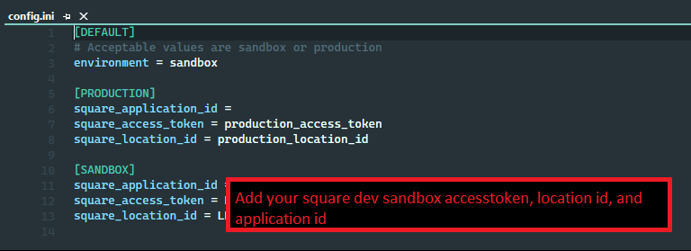

Your business' ecommerce, social media, and customer relationship management all in one package!
Explore the docs »
View Demo
·
Report Bug
·
Request Feature
This project was designed to include a fully functional ecommerce platform capable of supporting payments, shipping, an interactive social feed, and a scalable business management center via the paired back-end CRM, which I've dubbed "Zentry". In-house database creation and support achieved via postgresQL and SQLAlchemy.
Key Features of Zentry + Storefront:
Of course, business needs vary wildly from client to client. So I'll be adding more features in the near future! You may also suggest changes by forking this repo and creating a pull request or opening an issue. Thanks to all the people have mentored me, and to those who may make future contributions to expanding this project!
Use this README.md to get started!
This section lists the major frameworks/libraries used to create Zentry. Add-ons/plugins are listed in the acknowledgements section. Without these free resources, this project would not be possible!


| postgreSQL |

To set up this project locally, you'll need a few things! It's time to get a local copy up and running, so follow these simple steps:
You'll need this software if you don't have it already. Here is how to install them!
Below is a step-by-step guide of how you can install and set up this app!
$ git clone https://github.com/your_username_/Project-Name.git
Create a virtual environment to run Zentry
$ python3.11 -m venv venv
$ source venv/bin/activate
(venv) USER@NAME:~/YOUR/PATH/CLONED-REPO $
You can now install dependencies.
(venv) $ pip install -r requirements.txt
Enter your Square payment API details in config.ini
square_application_id = [YOUR INFO HERE] square_access_token = [YOUR INFO HERE] square_location_id = [YOUR INFO HERE]
* If you're launching your payments feature/app to production, use these config options instead.
[PRODUCTION]
square_application_id = square_access_token = [YOUR INFO HERE] square_location_id = [YOUR INFO HERE]
* Specify your environment:
* sandbox (demo)
* production (live)
[DEFAULT]
environment = sandbox ``` 
Set up your database of products, users, and transaction information!
The provided seed file
seed.pywill generate over 100 products, over 300 users, and a year's worth of accounting data. You can skip this step if you're planning on integrating an established database of your own design.
$ sudo service postgresql status
$ sudo service postgresql start
$ createdb YOUR_DB_NAME
seed.py to initialize the Budly database!app.py to your newly created databaseRun Zentry locally using Flask!
If you'd like to see the debug toolbar (gives you access to session variables, request variables, HTTP Headers, Logs, etc in a collapseable side-bar)
(venv)$ FLASK_DEBUG=True flask run
If you'd like run the application as a regular would see it, use the following command instead:
(venv)$ FLASK_DEBUG=False flask run
Use this space to show useful examples of how a project can be used. Additional screenshots, code examples and demos work well in this space. You may also link to more resources.
For more examples, please refer to the Documentation
[x] Social media platform integration where all users "chatters" can be seen, sorted by timestamp
[ ] Add Additional pages (FAQ, Landing page)
See the open issues for a full list of proposed features (and known issues).
Contributions are what make the open source community such an amazing place to learn, inspire, and create. Any contributions you make are greatly appreciated.
If you have a suggestion that would make this better, please fork the repo and create a pull request. You can also simply open an issue with the tag "enhancement". Don't forget to give the project a star! Thanks again!
git checkout -b feature/AmazingFeature)git commit -m 'Add some AmazingFeature')git push origin feature/AmazingFeature)Distributed under the MIT License. See LICENSE.txt for more information.
Your Name - @your_twitter - email@example.com
Project Link: https://github.com/your_username/repo_name
Use this space to list resources you find helpful and would like to give credit to. I've included a few of my favorites to kick things off!